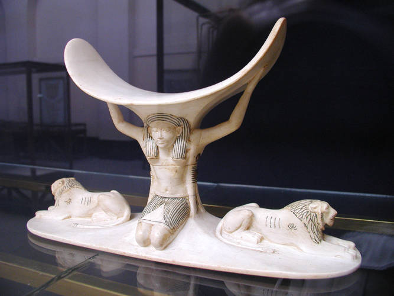
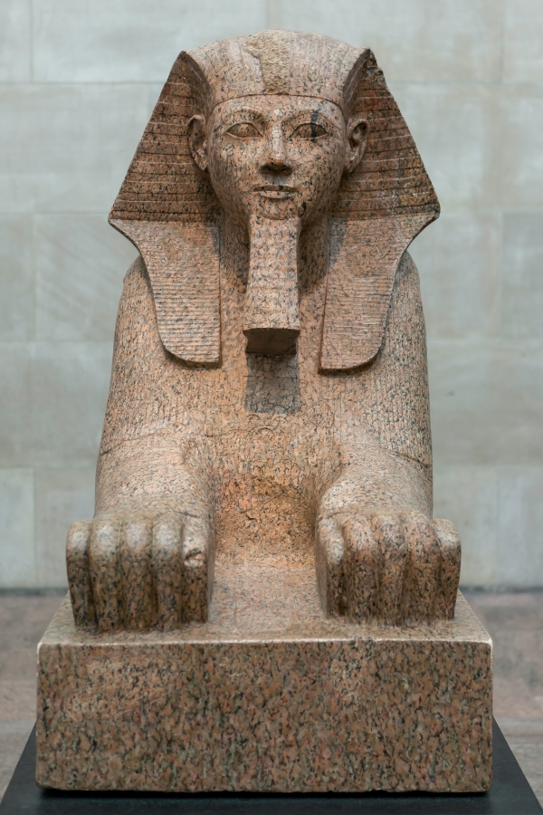
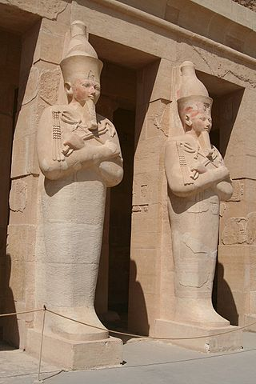
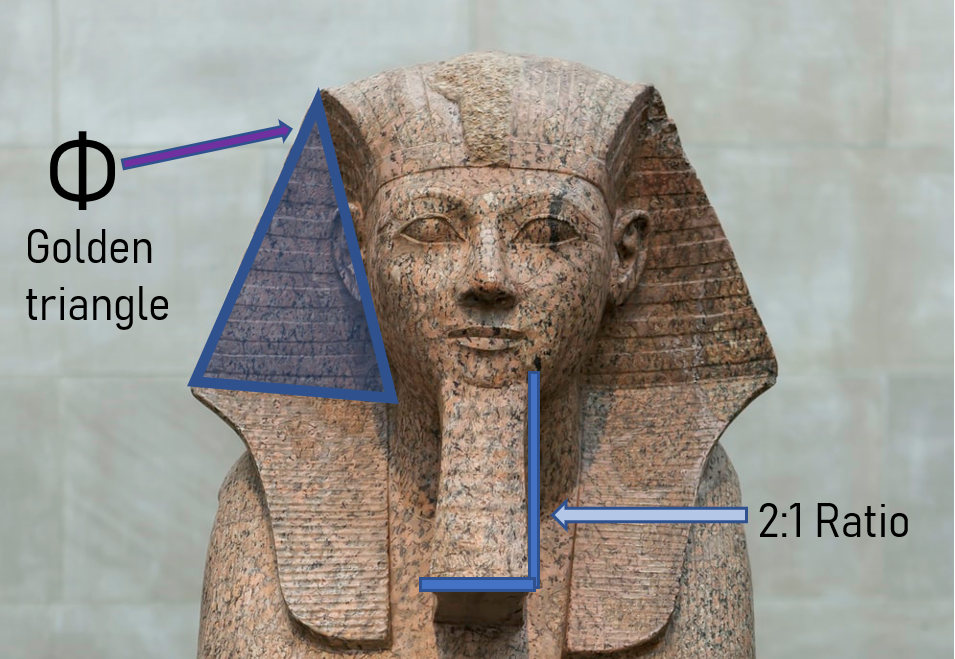

If you want to view the bust for yourself, you'll have to visit the Royal Ontario Museum (Canada).
Headrest of Tutankhamun

This ivory headrest was one of the many items found in the tomb of tutankhamun.
The two lions represent East and West.
They are also the typical companion animals of the God Shu, who is seen in the center.
Shu is the god of peace and the atmosphere between earth and universe
He is also the great-grandfather of Tutankhamun (as Pharaohs claim to be either Horus or his son).
But, the reason for Shu’s presence goes beyond that:
Headrests symbolize the sky. They hold up the head (the figurative sun).
...And that is the puzzlepiece we need to figure the meaning of this piece out:
- The lions point east and west, and rest on the soil.
- Shu connects the sun with the soil.
- The pharaoh’s head is a figurative sun, as he is a reincarnation of Horus (whose head bears the Sun).
If you want to know more, you may enjoy reading the established Egyptologist Bart Hellinckx, who wrote about the meaning of headrests.
You could also read the Rijksmuseum der Oudheden's insights on this exact piece (they kindly helped me out with writing this article).
The Sphinx of Hatshepsut

The Sphinx of Pharaoh Haphsepsut
When people are asked to name a female pharaoh, they will mostly name Cleopatra. But, Hatshepsut shows that other women were Pharaoh too.
Hatshepsut reigned from the start untill the middle of the 15th century BCE. She was not the first female to sit on Egypt's throne, but is remembered for a successful kingship and progressive reforms.
Her mortuary temple was rediscovered in the late 19th century.
It is remarkable that the Sphinx of Hatshepsut portrays the pharaoh as a man. It is not the only artifact that mispresents the subject's gender.
Some of the statues at her tomb are masculine for instance.

This Osirian statue is another example of Hatsheput's masculine presentation (standing next to the male god Osiris)
A last remark about this sphinx concerns its geometry. If you were to measure the false beard, you may realize it has a ratio of 1:2.
It goes to show that Egyptian sculptors were keen on manifesting proper geometry in their works. Another measurement is much more interesting however:
if you measure the angle of the headwear's sides, you may discover it is the angle of the Golden Triangle.
The golden ratio is known to have been used in other Egyptian designs, like the Great Pyramids at Giza.

Illustrating the presence of the golden ratio in the Sphinx of Hatshepsut. Note that the 1:2 ratio technically relates to the golden ratio as well, since both those numbers are part of the Fibonacci sequence.